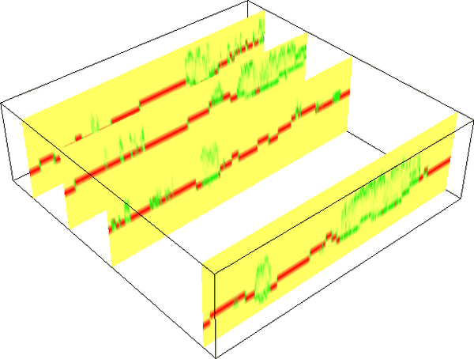

DESCRIPTION
The r.in.lidar module
is very similar to the r3.in.lidar module and many parts of
its documentation apply also for r3.in.lidar.

Figure: Proportional count of points per 3D cell. When 50% of all
points in a vertical column fall into a given 3D cell, the value
is 0.5. Here, the green color was assigned to 0.5, red to 1 and
yellow to 0. The figure shows vertical slices and green color
indicates high vegetation while red color indicates bare ground.
NOTES
-
This module is new and partially experimental. Please don't rely
on its interface and be critical towards its outputs.
Please report issues on the mailing list or in the bug tracker.
-
No reprojection is performed, you need to reproject ahead or
use GRASS Location which has the right coordinate system
which fits with the data.
-
Some temporary maps are created but not cleaned up. Use of
--overwrite might be necessary even when not desired.
-
Expects points to have intensity and causing random (undefined)
result for related outputs (sum, mean, proportional_sum)
when the intensity is not present but the outputs were requested.
EXAMPLES
Basic import of the data
Set the region according to a 2D raster and adding 3D minimum
(bottom), maximum (top) and vertical (top-bottom) resolution.
g.region rast=secref b=80 t=160 tbres=5 -p3
r3.in.lidar input=points.las n=points_n sum=points_sum \
mean=points_mean proportional_n=points_n_prop \
proportional_sum=points_sum_prop
Point density vertical structure reduced to the terrain
Create ground raster:
r.in.lidar input=points.las output=ground method=mean class_filter=2
g.region rast=secref b=0 t=47 -p3
r3.in.lidar input=points.las n=points_n sum=points_sum \
mean=points_mean proportional_n=points_n_prop \
proportional_sum=points_sum_prop \
base_raster=ground
Complete workflow for vertical structure analysis
Compute the point density of points in 2D while setting the output
extent to be based on the data (-e) and the resolution set to
a relatively high number (here 10 map units, i.e. meters for
metric projections).
r.in.lidar input=points.las output=points_n method=n -e resolution=10
The class_filter option should be also provided if only part of
the points is analyzed, for example class_filter=3,4,5 would be
used for low, medium, and high vegetation if the LAS file follows the
usedstandard ASPRS class numbers.
The resolution should be suitable for computing digital elevation model
which will be computed in the next steps.
Once you decided on the resolution, you can use the 2D raster to set the
computational region extent and resolution:
g.region raster=points_n -p3
r.in.lidar input=points.las output=ground_mean method=mean class_filter=2
Convert the raster to vector point resulting in a decimated point cloud:
v.to.rast input=ground_mean type=point output=ground_decimated use=z
v.surf.rst input=ground_decimated elevation=ground
r.in.lidar input=points.las method=max output=veg_max class_filter=3,4,5 base_raster=ground -d
g.region rast=secref b=0 t=40 res=1 res3=1 -p3
Finally, we perform the 3D binning where we count number of points per
cell (voxel):
r3.in.lidar input=points.las n=n class_filter=3,4,5 base_raster=ground -d
SEE ALSO
r3.in.xyz,
r.in.lidar,
v.in.lidar,
r.to.rast3,
r3.to.rast,
r3.mapcalc,
g.region
REFERENCES
AUTHOR
Vaclav Petras, NCSU GeoForAll Lab